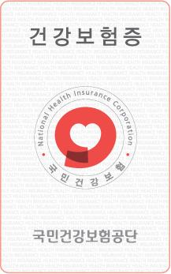

Foreign Residents Who Are Required to Subscribe to the National Health Insurance
Foreign residents who are registered and work at businesses where employee subscriber policies are applied, or foreign residents who are appointed as public officers and teachers, are granted the status of employee subscribers. Foreign residents who are registered and who are not categorized as an employee subscriber or a dependent of an employee subscriber may gain the status of local subscribers upon request after having lived in Korea for three months or longer. Local subscribers must maintain the statute of residence as prescribed in the Attached Table 9 of the Enforcement Decree of the National Health Insurance Act while having stayed in Korea for three months or more. Foreign residents who have not yet been in Korea for three months may subscribe to the national health insurance plan if there is a clear reason for a stay of more than three months, such as studies or marriage based immigration.
[UPDATE: 2019.07.16]
Counseling and Inquiries – Customer Support Center For detailed information on premiums, qualifications, and benefits of national health insurance, visit the National Health Insurance Corporation website or call the main number (☎1577-1000) or foreign language (English, Chinese, and Vietnamese) information service (☎033-811-2000).